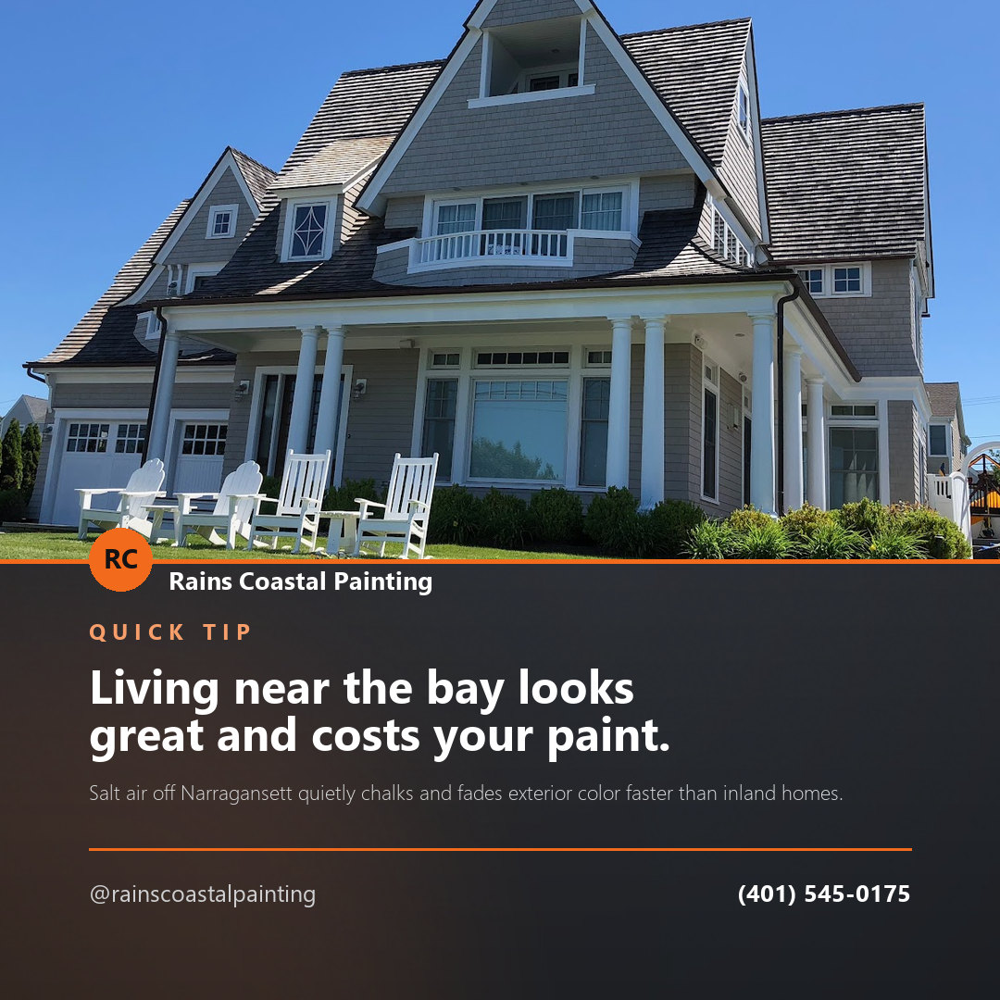
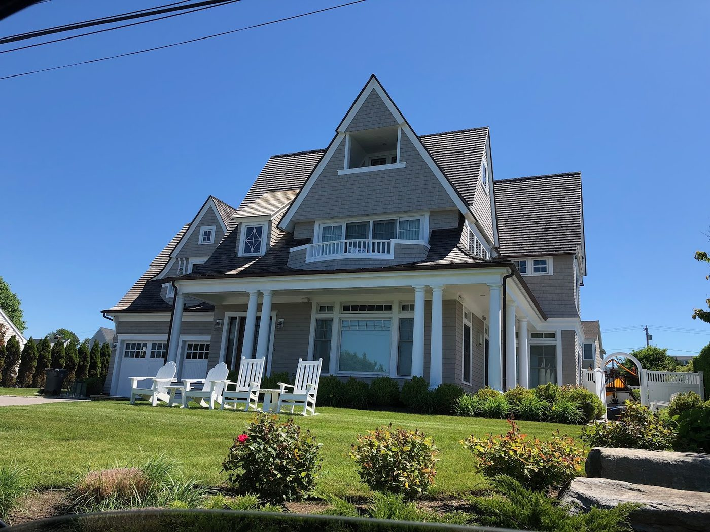
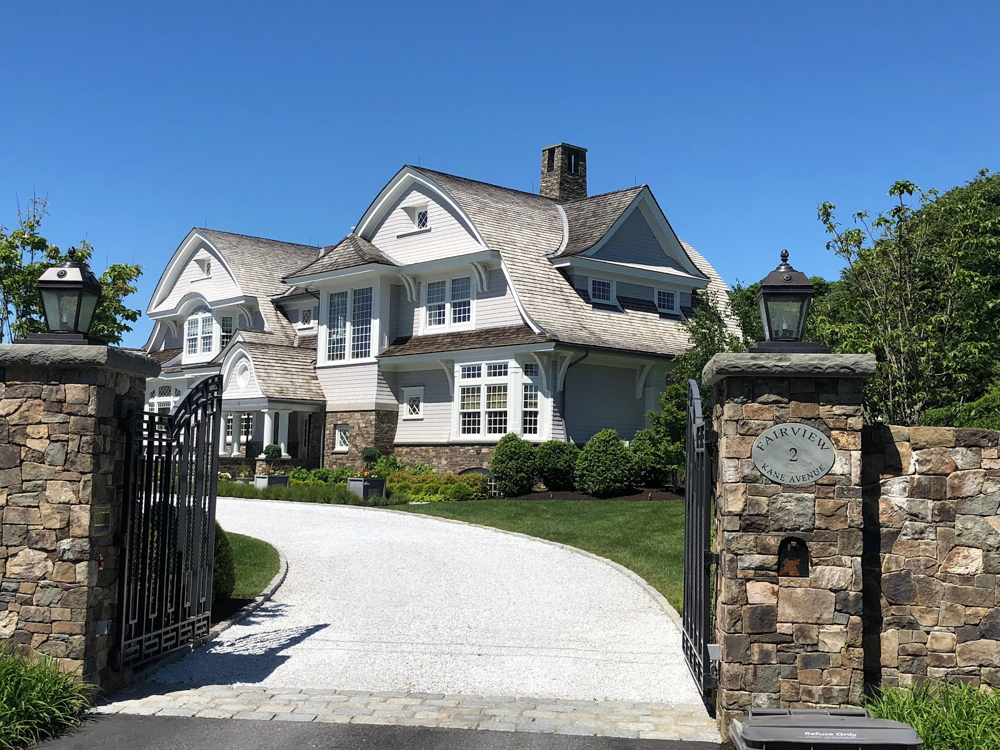
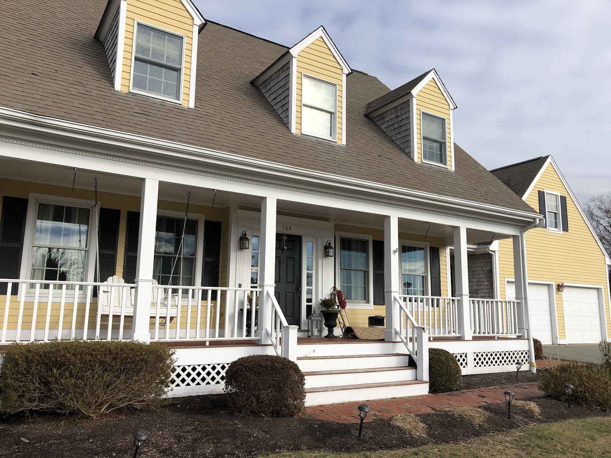
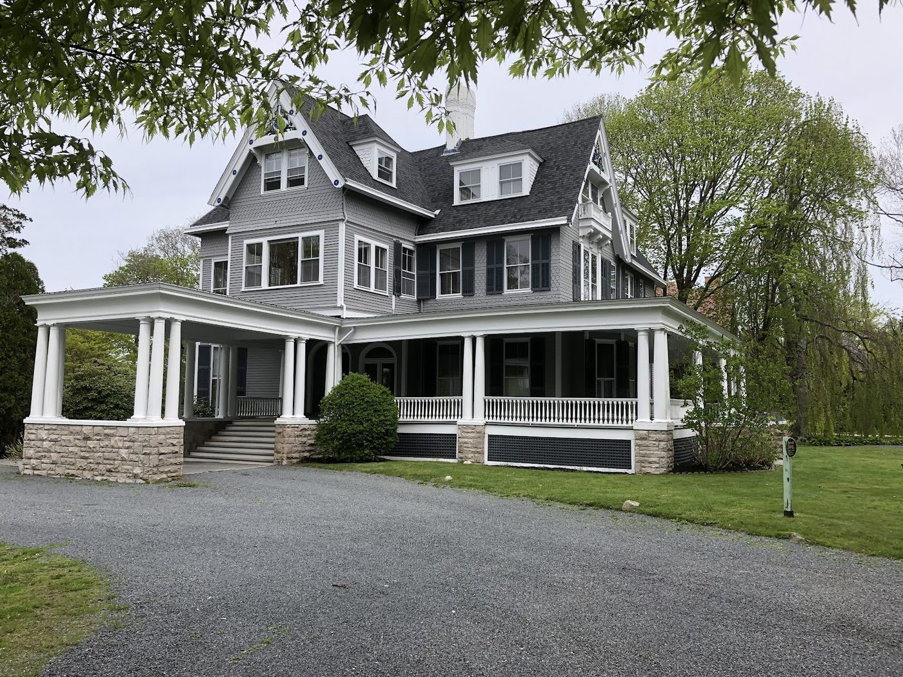

Post idea · Facebook
Living near the bay looks great and costs your paint. Salt air off Narragansett quietly chalks and fades exterior color faster than inland homes. We prep and coat with that ocean exposure in mind.
North Kingstown, Rhode Island
Professional painters serving all of RI and MA. Whatever the job, our team works with you to find the perfect color for your home.
Call for a Free QuoteCentrally located in North Kingstown, RI, Rains Coastal Painting handles residential and commercial work alike. Our professional painters specialize in custom painting services, using the highest quality paint to bring your space to life.
No matter the job, we are confident that our team is the right choice for you — professional painters with years of experience in both interior and exterior painting.
Custom painting services using the highest quality paint. We work with you to find the perfect color for your home, inside and out.
From cabinets, bathroom and kitchen remodels, and furniture restoration to power washing — we have you covered.
"Let Rains Coastal Painting transform your home into your dream space with our professional painters, specializing in both interior and exterior painting." — Rains Coastal Painting, in their own words




Proudly serving all of Rhode Island and Massachusetts.
Content